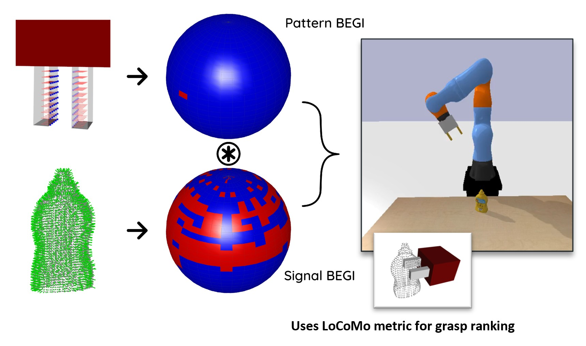
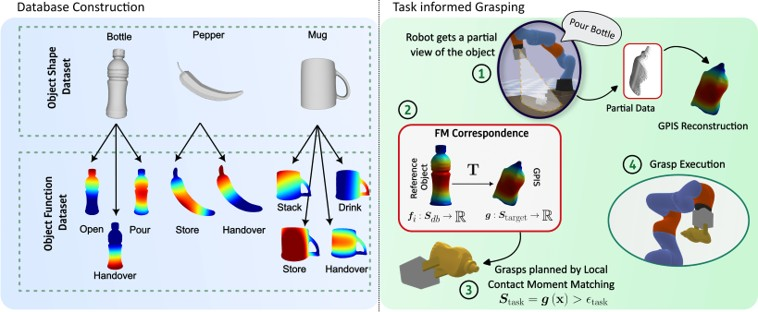
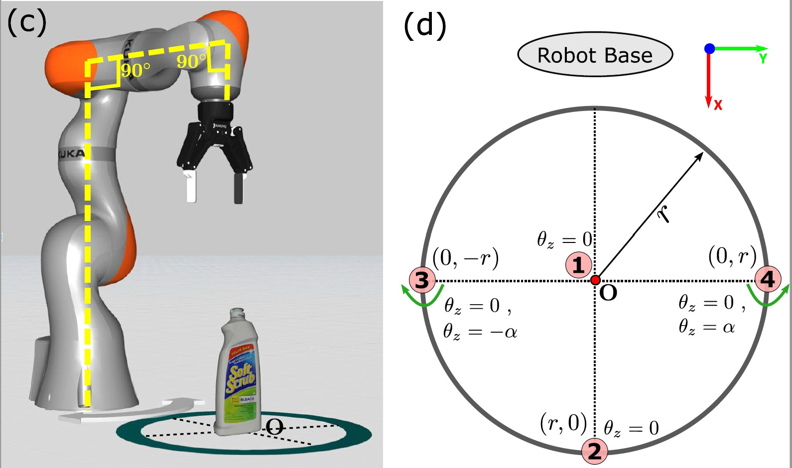
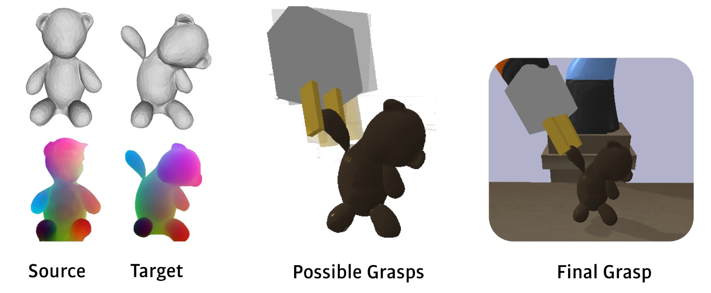

Robotic Grasping & Manipulation

Model-free Grasp Planning
Fast grasp synthesis for cluttered scenes.

Exploratory Grasping
Adaptive exploration for uncertain objects.

Moving Object Grasping
Grasping arbitrarily moving objects in 3D space by local-global planning.

Grasping by Spectral Correlation
Correlation-based scoring for grasp ranking.

Task-informed Grasping
Task-aware grasp selection for success.

Exploratory Manipulation
Unfastening nuts by surface exploration.

Benchmarking Grasp Planning
We propose a methodology for reproducible experiments to compare the performance of a variety of grasp planning algorithms.

Human-supervised Autonomy
Autonomous grasping as an “operator assistance” technology at NNL Workington site.

Grasping Deformable Objects
Learning robust strategies for soft, non-rigid items.